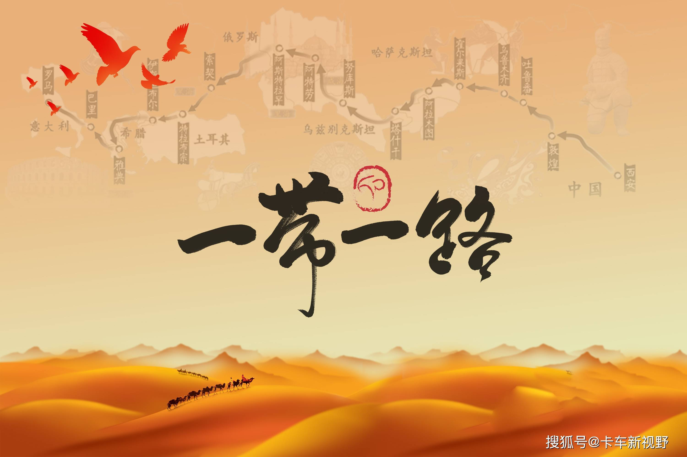

historical background
丝绸之路是起始于古代中国，连接亚洲、非洲和欧洲的古代陆上商业贸易路线，最初的作用是运输古代中国出产的丝绸、瓷器等商品，后来成为东方与西方之间在经济、政治、文化等诸多方面进行交流的主要道路。

1877年，德国地质地理学家李希霍芬在其著作《中国》一书中，把“从公元前114年至公元127年间，中国与中亚、中国与印度间以丝绸贸易为媒介的这条西域交通道路”命名为“丝绸之路”，这一名词很快被学术界和大众所接受，并正式运用。其后，德国历史学家郝尔曼在20世纪初出版的《中国与叙利亚之间的古代丝绸之路》一书中，根据新发现的文物考古资料，进一步把丝绸之路延伸到地中海西岸和小亚细亚，确定了丝绸之路的基本内涵，即它是中国古代经过中亚通往南亚、西亚以及欧洲、北非的陆上贸易交往的通道。
丝绸之路从运输方式上，主要分为陆上丝绸之路和海上丝绸之路。
陆上丝绸之路，是指西汉（前202年—8年）汉武帝派张骞出使西域开辟的以首都长安（今西安）为起点，经凉州、酒泉、瓜州、敦煌、新疆、中亚国家、阿富汗、伊朗、伊拉克、叙利亚等而达地中海，以罗马为终点。这条路被认为是连结亚欧大陆的古代东西方文明的交汇之路，而丝绸则是最具代表性的货物。
海上丝绸之路，是指古代中国与世界其他地区进行经济文化交流交往的海上通道，最早开辟也始于秦汉时期。从广州、泉州、宁波、扬州等沿海城市出发，从南洋到阿拉伯海，甚至远达非洲东海岸的海上贸易的“海上丝绸之路”。
随着时代发展，丝绸之路成为古代中国与西方所有政治经济文化往来通道的统称。除了“陆上丝绸之路”和“海上丝绸之路”，还有北向蒙古高原，再西行天山北麓进入中亚的“草原丝绸之路”等。
当今世界正发生复杂深刻的变化，国际金融危机深层次影响继续显现，世界经济缓慢复苏、发展分化，国际投资贸易格局和多边投资贸易规则酝酿深刻调整，各国面临的发展问题依然严峻。共建“一带一路”顺应世界多极化、经济全球化、文化多样化、社会信息化的潮流，秉持开放的区域合作精神，致力于维护全球自由贸易体系和开放型世界经济。共建“一带一路”旨在促进经济要素有序自由流动、资源高效配置和市场深度融合，推动沿线各国实现经济政策协调，开展更大范围、更高水平、更深层次的区域合作，共同打造开放、包容、均衡、普惠的区域经济合作架构。共建“一带一路”符合国际社会的根本利益，彰显人类社会共同理想和美好追求，是国际合作以及全球治理新模式的积极探索，将为世界和平发展增添新的正能量。
共建“一带一路”致力于亚欧非大陆及附近海洋的互联互通，建立和加强沿线各国互联互通伙伴关系，构建全方位、多层次、复合型的互联互通网络，实现沿线各国多元、自主、平衡、可持续的发展。“一带一路”的互联互通项目将推动沿线各国发展战略的对接与耦合，发掘区域内市场的潜力，促进投资和消费，创造需求和就业，增进沿线各国人民的人文交流与文明互鉴，让各国人民相逢相知、互信互敬，共享和谐、安宁、富裕的生活。
30多年来，中国改革开放事业取得了巨大成就，同时也存在着缺乏顶层设计、谋子不谋势和不注重改善国际发展环境等问题，迫切需要加强各方面改革开放措施的系统集成。以开放促改革是中国改革开放的基本经验，其成功秘诀在于通过主动融入世界市场为公司治理、政府治理引入外部监督从而提高治理效率。但是，30多年来无论是宏观中观还是微观层面改革创造的外部监督都不是真正的外部监督，监督主体一定程度上只是治理者的化身、不是来自治理体系外部的主体，效率低下问题仍得不到根本解决，亟待全面深化改革。“一带一路”倡议既是今后中国对外开放的总纲领，也理应成为全面深化改革的总钥匙。通过融入国际治理和开展国企的跨国产权合作，“一带一路”倡议的实施在有效避免“西方经验”局限、防止治理本身被“短视”市场消解和坚持“四项基本原则”的同时，将为中国经济治理、国家治理、社会治理进一步引入来自治理体系之外的监督主体，创造强有力、更有效的外部监督，从根本上解决治理效率问题。当前，在经济新常态和改革“空转”情况下，迫切需要加强以“一带一路”倡议为引领构建开放型经济新体制，全面统筹促进国内各领域改革发展特别是供给侧改革。
当前，中国经济和世界经济高度关联。中国将一以贯之地坚持对外开放的基本国策，构建全方位开放新格局，深度融入世界经济体系。推进“一带一路”建设既是中国扩大和深化对外开放的需要，也是加强和亚欧非及世界各国互利合作的需要，中国愿意在力所能及的范围内承担更多责任义务，为人类和平发展作出更大的贡献。
第71届联合国大会决议欢迎“一带一路”等经济合作倡议，敦促各方通过“一带一路”倡议，呼吁国际社会为“一带一路”倡议建设提供安全保障环境。 [12] 2016年12月16日（“一带一路”国际日），全球留学生志愿者举行庆祝活动，联合国总部降旗以示欢迎。